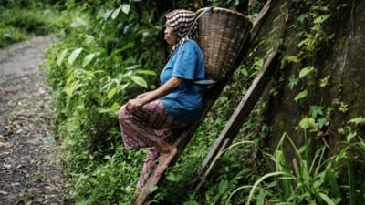
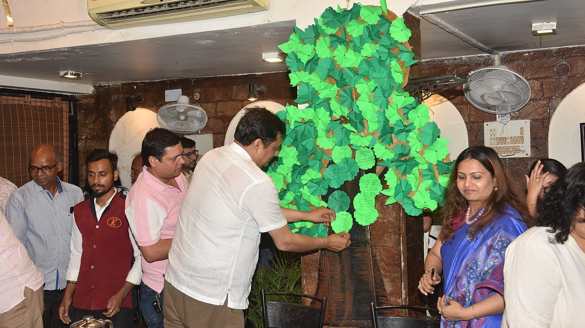

|  |
On the Indonesian island of Ternate, clove farmers face a new threat: climate change. Unpredictable rainfall and extreme weather are impacting yields, causing financial strain and forcing farmers to seek alternative incomes. While Indonesia remains a major clove producer, fluctuating prices and declining harvests jeopardize a historical legacy, urging global attention to climate issues. The impact of climate change on clove farmers in Ternate highlights the vulnerability of small-scale agriculture to environmental shifts. Rising temperatures and altered precipitation patterns threaten not only the livelihoods of farmers but also the cultural heritage tied to clove production. Efforts to adapt and mitigate these effects are crucial to preserving Indonesia's clove industry and supporting the communities that depend on it. Sustainable practices, climate-resilient farming techniques, and diversified income sources could help farmers cope with these challenges. Additionally, global market support and fair trade practices might alleviate financial strain, enabling clove farmers to maintain their traditional way of life amidst the changing climate. |
UNICEF hosts Climate conversation season1 to engage social media influencers, podcasters, media, CSOs and environmentalists and seek solutions
|  |
Bhopal (Madhya Pradesh):Climate Conversation Season 1 was organised in the city by UNICEF, engaging diverse partners as part of its efforts to increase discourse and involve social media influencers, podcasters, media, CSOs, and environmentalists to seek solutions. Saurabh Popli, who works on environmental issues and is also an Associate Professor at the School of Planning and Architecture, said that global temperature rise is happening and it has significant implications for human societies and ecosystems.He emphasized the need for collective action to mitigate the effects of climate change, highlighting the importance of sustainable practices, renewable energy, and environmentally conscious policies. The conversation also touched upon the role of individuals, communities, and governments in addressing the climate crisis and promoting a greener future. By engaging diverse stakeholders, the initiative aims to foster a culture of climate awareness and inspire meaningful change. |